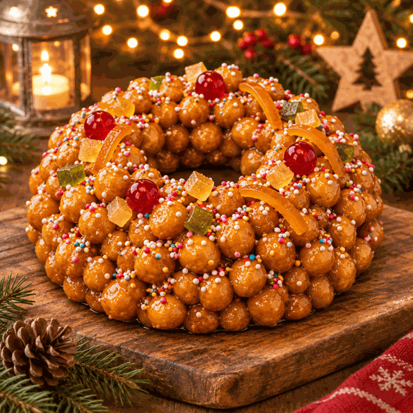

Todas las recetas › Napoli
Las Fiestas de Tavolata: Napoli
Struffoli
En Nápoles no es Navidad sin struffoli: bolitas de masa frita cubiertas de miel y de «diavolilli», las grageas de colores, que se preparan en gran cantidad y se regalan a familiares y amigos.
Raciones8
Preparación1 h
Cocción20 min
Reposo30 min
DificultadMedia
Alérgenos: Gluten, Huevos, Leche

Guardar en PinterestIngredientes
- Harina · 400 g
- Huevos · 4
- Azúcar · 1 cucharada
- Mantequilla · 50 g
- Licor de anís o limoncello · 1 cucharada
- Ralladura de limón · ralladura de 1
- Aceite de semillas para freír · al gusto
- Miel · 300 g
- Piel de naranja y cidra confitada · 80 g
- Grageas de colores (diavolilli) · 2 cucharadas
Paso a paso
- Amasa la harina, los huevos, el azúcar, la mantequilla, el licor y la ralladura de limón hasta obtener una masa lisa; déjala reposar tapada 30 minutos.
- Forma cordones del grosor de un dedo y córtalos en trocitos de 1 cm aproximadamente.
- Fríe las bolitas poco a poco en aceite caliente 2–3 minutos por tanda (unos 20 minutos en total), hasta que estén doradas, y escúrrelas sobre papel absorbente.
- Calienta la miel en una olla ancha, echa los struffoli y remueve hasta que estén todos brillantes. Colócalos en forma de rosca y decora con fruta confitada y grageas de colores.
El consejo del chef. Los struffoli se pueden preparar unos días antes: tapados se mantienen tiernos y la miel les da aún más sabor.
Cocina esta receta también en Tavolata
En el juego combinas ingredientes, completas pedidos y restauras ciudades italianas, de Firenze a Milano. Gratis, con recetas auténticas en el Recetario.
Descargar en el App Store